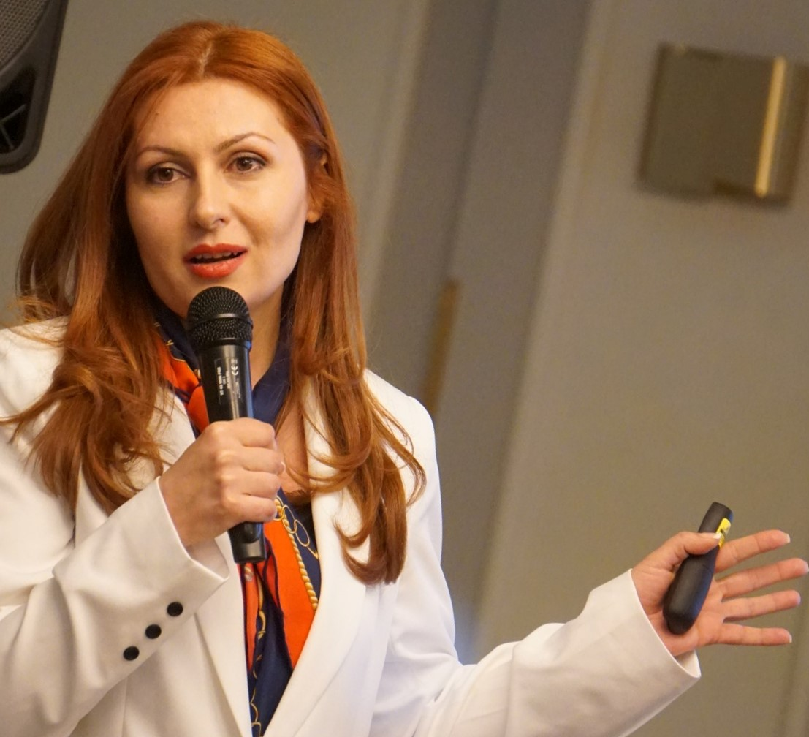

Arusyak Aleksanyan
Associate Professor · Head of Research Unit · Political Scientist
Center for European Studies, Yerevan State University — Department of Political Science
International Scientific-Educational Center, National Academy of Sciences of Armenia
I am a political scientist and Associate Professor whose work focuses on democratization, political stability, policy analysis, European affairs, research methodology, parliamentary development, public opinion research, institutional capacity assessment, and composite index development. I am the author of around 70 scientific articles, chapters, books, and research works, including the Stability Index of Political System (SIPS), the Index of Democracy Level (IDL), the Index of Parliament Perception (IPP), and the co-authored Education Preparedness Index in COVID-19 (EPIC).

At a glance
Key Expertise
A blend of rigorous research methodology, quantitative analysis, and applied policy work across democratic governance, parliamentary development, and European affairs.
Research Methodology & Survey Design
Designing rigorous, methodologically sound research and survey instruments.
Composite Index Development
Building scorecards, indices, and assessment frameworks from concept to calculation.
Parliamentary Capacity Assessment
Evaluating institutional and administrative capacity of legislative bodies.
Public Opinion Polling & Data Analysis
Polling design, data collection, statistical analysis, and interpretation.
Democratic Governance & Institutional Reform
Advancing governance reform and institutional development.
European Affairs & Eastern Partnership
Research on EU democracy support and the Eastern Neighbourhood.
Research Ethics & Academic Supervision
Ethical oversight, supervision, and mentoring of researchers.
Political Stability & Democratization
Analysis of political systems, stability, and democratization processes.
Research Interests
Current & Recent Professional Experience
Head of the Research Unit & Lecturer
- Lead and implement wide-scale interdisciplinary research projects;
- Develop curricula and teaching materials;
- Provide lectures and seminars for students;
- Supervise master's theses;
- Conduct research in democratization, policy analysis, research methods, political stability, and European affairs.
Lecturer
- Teach courses on political technologies and research methods;
- Develop curricula and teaching materials;
- Provide lectures and seminars for students, including postgraduate students;
- Supervise academic research and theses.
YSU Partner Team Lead — REDEMOS Project
- Lead YSU research activities within WP2;
- Coordinate YSU input across different work packages;
- Contribute to research on EU democracy support in the Eastern Neighbourhood.
Vice Chair, Research Ethics Committee
- Evaluate research proposals to ensure compliance with ethical standards;
- Advise researchers on ethical best practices and emerging ethical issues;
- Support the protection of participants' rights, safety, dignity, and well-being.
National Expert on Survey Design & Analysis for Parliamentary Administrative Capacity
- Design and adapt an Administrative Capacity Assessment Survey for MPs, aligned with IPU Indicators and the Armenian parliamentary context;
- Develop the questionnaire, scoring methodology, guidance notes, and aggregation logic;
- Implement the MP survey in coordination with UNDP and National Assembly focal points;
- Analyze survey data and integrate MP-based findings with the Institutional Capacity Index and Public Opinion Poll methodology;
- Prepare an analytical report with findings, recommendations, and ICI integration methodology.
Local Consultant for Parliamentary Data Analysis & Visualization
- Develop parliamentary indicator baskets and a unified methodology for data collection, validation, and aggregation;
- Design and implement an internal aggregation system;
- Integrate departmental data into the "Parliament in Figures" webpage;
- Train and mentor National Assembly staff on data entry, validation, interpretation, and maintenance;
- Review and upgrade the MAP 2.0 Public Opinion Poll questionnaire.
National Senior Expert on Statistics & Data Collation for Developing an Index
- Review the public opinion poll methodology and questionnaire;
- Develop the structure and methodology for the Index of Parliament Perception;
- Apply the index and calculate results;
- Analyze results and prepare the report on the Index of Parliament Perception in Armenia.
Head of Research — "Enabling Learning to Happen for All Children in Emergency Crisis"
- Develop the research roadmap and methodology;
- Coordinate expert research assignments;
- Supervise team members and ensure timely delivery;
- Coordinate the development of the Education Preparedness Index in COVID-19;
- Ensure research deliverables meet quality and scientific standards.
Co-editor, Editorial Committee
- Handle submissions;
- Enforce deadlines;
- Manage content areas;
- Review and edit academic articles.
Academic Coordinator — "The Influence of Diaspora on Democracy-Building Processes"
- Develop the research methodology outline;
- Follow up on regional research papers;
- Produce a regional research paper;
- Ensure academic standards for publication.
Earlier Experience
Head of Information Analysis & Program Development Department
Center for Organizing Youth Activities SNCO, Ministry of Sport and Youth Affairs of Armenia · 2009–2011External Relations Officer
Foundation for Applied Research and Agribusiness · 2005–2008Projects & International Engagements
Applied research and advisory work for EU Horizon, UNDP, and international human rights initiatives, spanning democracy support, parliamentary modernization, and education in crisis settings.
REDEMOS (EU Horizon)
YSU Partner Team Lead — EU democracy support in the Eastern Neighbourhood (2023–2026).
UNDP FORSETI / MAP 2.0
Parliamentary Administrative Capacity survey design and ICI integration (2026).
UNDP MAP — Parliament in Figures
Indicator baskets, aggregation system, and data visualization (2025).
Index of Parliament Perception
Methodology, calculation, and national report for Armenia (2022–2023).
Education in Emergency Crisis
Head of Research; coordinated the EPIC index (2020–2021).
Diaspora & Democracy-Building
Academic Coordinator, Global Campus regional research (2018).
Index Development & Methodological Contributions
A core thread of my work is translating complex political and institutional phenomena into rigorous, measurable composite indices and assessment frameworks.
Stability Index of Political System (SIPS)
Index of Democracy Level (IDL)
Index of Parliament Perception (IPP)
Education Preparedness Index in COVID-19 (EPIC)
Parliamentary Indicator Baskets & Aggregation Methodology
Administrative Capacity Assessment Survey & ICI Integration
Education & Qualifications
Associate Professor
Academic title in Political Science.
PhD in Political Science
Institute of Philosophy, Sociology and Law, National Academy of Sciences of Armenia. Dissertation: Application of technologies for political situations analysis in RA.
Postgraduate Studies
Department of Political Science, Faculty of International Relations, Yerevan State University.
MA in Political Science
Faculty of International Relations, Yerevan State University — honor diploma.
BA in Political Science
Faculty of International Relations, Yerevan State University — honor diploma.
IT Skills
Languages
Publications & Research Output
Author of around 70 scientific articles, chapters, books, and research works. Selected publications and research outputs include books, edited volumes, peer-reviewed articles, datasets, project reports, and methodological works on democratization, political stability, parliamentary development, European affairs, and index-based assessment.
Selected Publications
Chappell, L., Aleksanyan, A., Exadaktylos, T., & Richter, M. M. (2026). Stocktaking of EU democracy support towards the eastern neighbourhood. Zenodo.
https://doi.org/10.5281/zenodo.19219915Raik, K., Gretskiy, I., Fedosiuk, T., Metreveli, E., Gogolashvili, K., Aleksanyan, A., & Maltsev, A. (2026). Third-Country Competition and EU Democracy Support in the Eastern Neighborhood. Zenodo.
https://doi.org/10.5281/zenodo.18267307Karokis-Mavrikos, V., Exadaktylos, T., Chappell, L., Aleksanyan, A., Gevorgyan, V., & Maltsev, A. (2026). Contrasting EU and EU member states' democracy support action. Zenodo.
https://doi.org/10.5281/zenodo.18222458Gomza, I., Rabinovych, M., Hartvih, D., Darkovich, A., Karokis-Mavrikos, V., Exadaktylos, T., Chappell, L., Aleksanyan, A., Sahakyan, A., & Muradyan, M. (2025). Talking About Democracy? A Comparative View of Discourses in the European Union and Armenia, Belarus, and Ukraine. Zenodo.
https://doi.org/10.5281/zenodo.18232289Aleksanyan, A., Manukyan, N., Mkrtchyan, N., Rebilas, R., & Vardanyan, N. (2025). "Extracurricular Activities in Higher Education: Challenges, Economic Implications, and Practices in Armenia and the EU". Forum Scientiae Oeconomia, 13(2): 52–75.
https://doi.org/10.23762/FSO_VOL13_NO2_3Aleksanyan, A. (2025). Armenia: Economy. In Europa Publications (Ed.), Eastern Europe, Russia and Central Asia 2026. Routledge.
View on RoutledgeExadaktylos, T., Richter, M. M., Aleksanyan, A., Aleksanyan, A., Chappell, L., Denysenko, D., & Sherents, V. (2024). Taking Stock of EU Member States Democracy Action towards the Eastern Neighbourhood. Zenodo.
https://doi.org/10.5281/zenodo.14336788Aleksanyan, A. (ed.). (2024). Resilient Political Systems at the Crossroads of Hybrid Wars and Peace (Armenia, Georgia, Azerbaijan, Iran, Turkey, Russia, and Ukraine). Yerevan: YSU Press.
https://doi.org/10.46991/YSUPH/9785808426931Aleksanyan, A., & Aleksanyan, A. (2024). Resilience of Civiliarchic Democracy in the Face of Challenges and Gaps in European Integration: The Political Dimension of the Index of Civiliarchy. Journal of Political Science: Bulletin of Yerevan University, 3(3(9)): 97–138.
https://doi.org/10.46991/JOPS/2024.3.9.097Aleksanyan, A., Serobyan, A., Chappell, L., Exadaktylos, T., Gevorgyan, K., & Richter, M. M. (2024). EU and EU Member States' Democracy Support Actions (2010–2022). REDEMOS Dataset 2.5. Zenodo.
https://doi.org/10.5281/zenodo.13145726Aleksanyan, A. & Muradyan, M. (eds.). (2023). Education Preparedness Index in COVID-19 (EPIC). Methodology and Research. Yerevan: YSU Press.
https://doi.org/10.46991/YSUPH/9785808425910Aleksanyan, A., & Aleksanyan, A. (2022). Rethinking the Non-resilience of Trade Unions in Armenia: How to Protect Social Rights and Freedoms of Workers? Journal of Political Science: Bulletin of Yerevan University, 1(1): 78–106.
https://doi.org/10.46991/JOPS/2022.1.1.078Aleksanyan, A. & Aleksanyan, A. (2021). Political Stability Challenges in the EEU countries: Political Factors Index. Yerevan: YSU Press.
https://doi.org/10.46991/YSUPH/9785808425200Aleksanyan, A. (2020). "The Factor of Armenian Genocide in the Current Armenian-Turkish Relations: Scenario Analysis". Bulletin of Yerevan University D: International Relations, Political Science, 2(32): 27–41.
View articleAleksanyan, A. (ed.). (2019). Challenges to the Consolidation of Modern Democracy: IDL Comparative Analysis (Armenia, Georgia, Azerbaijan, Russia, Belarus, Kazakhstan, Kyrgyzstan, Ukraine and Moldova). Yerevan: YSU Press.
View publicationAleksanyan, A. (2019). "Editorial: The influence of diasporas on democracy-building processes: Behavioural diversity". Global Campus Human Rights Journal, 3(1): 1–5.
https://doi.org/20.500.11825/999Aleksanyan, A., Bejanyan, V., Dodon, C., Maksimenko, K., & Simonian, A. (2019). "Diaspora and democratisation: Diversity of impact in Eastern Partnership countries". Global Campus Human Rights Journal, 3(1): 86–112.
https://doi.org/20.500.11825/993Aleksanyan, A. (ed.). (2018). Political Stability of Newly Independent Countries under Conditions of Modernization (Armenia, Georgia, Azerbaijan, Russia, Belarus, Kazakhstan, Kyrgyzstan, Ukraine and Moldova). Yerevan: YSU Press.
View publicationAleksanyan, A. (2018). "Regional Perspectives on Democratisation of Eastern Partnership countries". Global Campus Human Rights Journal, 2(1): 193–208.
https://doi.org/20.500.11825/681Aleksanyan, A. (ed.). (2017). Trends of the Index of Democracy Level in the Dimension of Human Rights and Democratization (Armenia, Georgia, Azerbaijan, Russia, Belarus, Kazakhstan, Kyrgyzstan, Ukraine and Moldova). Yerevan: YSU Press.
Aleksanyan, A. (ed.). (2016). Comparative Analysis of the Index of Democracy Level in the Context of Human Rights and Democratization (Armenia, Georgia, Azerbaijan, Russia, Belarus, Kazakhstan, Kyrgyzstan, Ukraine and Moldova). Yerevan: YSU Press.
View publicationAleksanyan, A. (ed.). (2015). Comparative Analysis of the Index of Democracy Level: Armenia, Georgia, Azerbaijan, Russia, Belarus, Kazakhstan, Ukraine and Moldova. Yerevan: YSU Press.
Download PDFAleksanyan, A. (2015). "Comparative Cross-Country Analysis of the Index of Democracy Level". 21st CENTURY, 4(62): 138–152.
View articleAleksanyan, A. (2014). "The Index of Democracy Level of Armenia (1995–2012)". Bulletin of Yerevan University. International Relations, Political Science, 3: 60–75.
Download PDFAleksanyan, A. (ed.). (2013). The Political Stability Index of the South Caucasus, EurAsEC and EU Member States: In-Country and Cross-Country Analysis. Yerevan: Yerevan University Press.
Aleksanyan, A. (2013). "Index of Democracy Level (IDL): Discovering Factors that Influence Democracy in Armenia". Research of Carnegie Corporation of New York and CRRC-Armenia.
View researchContact
For academic collaboration, research consultancy, or speaking invitations, please reach out by email.